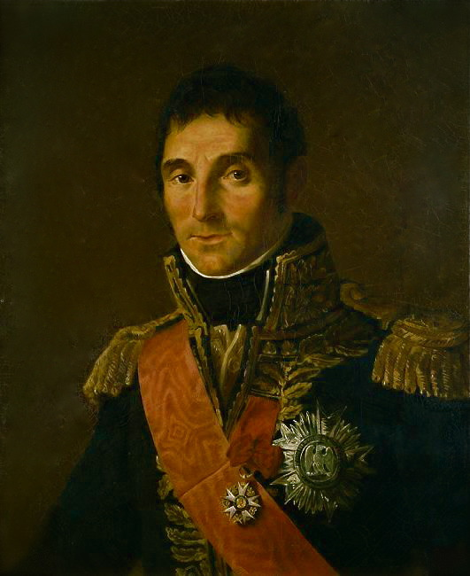
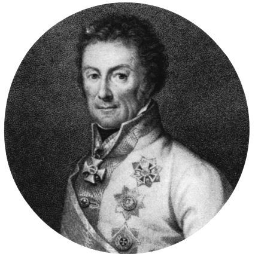

바그람 전투 (제13편) - 마세나의 8km
게시: 2017-09-04T12:46:34+09:00
로리스통의 대규모 포병단이 오스트리아 제3 군단을 갈아엎는 동안, 마세나도 쉴 틈 없이 바빴습니다. 그는 나폴레옹의 명령에 따라 새벽에 저 남쪽 아스페른 쪽에서 힘들게 행군해 올라온 뒤, 베르나도트가 구멍을 낸 아더클라를 탈환하기 위해 혈투를 벌이고 있었지요. 그런데 불과 몇 시간 만에, 나폴레옹은 그에게 '왔던 길로 다시 내려가 그 쪽으로 침투해온 클레나우의 오스트리아 제6 군단을 쫓아내라'고 명령했던 것입니다. 이때가 대략 오전 11시 경이었습니다.
당시 병사들에게 이렇게 의미를 알 수 없는 행군과 애써 왔던 길을 되짚어 가는 역행군이 흔한 일이기는 했습니다. 하지만 이번에는 평소보다 더 험난한 행군길이 예약되어 있었습니다. 걸아가야 하는 길이 무려 8km 정도로서 정상적인 행군으로는 거의 2시간 거리였는데, 문제는 그 길이 정상적인 행군이 불가능한 환경이라는 점이었습니다. 낭수티의 기병대가 목숨을 던져가며 벌어들인 시간을 쓰는 것이니 만큼, 신속한 행군이 필수적이었습니다. 그렇게 신속하게 행군을 하려면 보병 방진을 짜고 행군하는 것은 말도 안되는 일이었고, 어쩔 수 없이 느슨하고 긴 종대로 행군해야 했습니다. 그런데 이 긴 행군 길의 오른쪽 측면, 즉 서쪽 측면에는 오스트리아군이 득실거렸습니다. 프랑스군에게는 다행히도 콜로브라트가 지휘하는 이 오스트리아군은 무척 소극적인 태도이긴 했지만, 그들의 포병대와 기병대가 그의 취약한 종대 행렬을 2시간 내내 두들길 것이 뻔했습니다.
마세나는 나폴레옹으로부터 남쪽 아스페른으로의 행군을 명령받자, 그 명령의 어려움을 직감했습니다. 그는 나폴레옹의 사령부가 있는 라스도르프(Raasdorf) 인근으로 몰려온 도망병들을 포함한 자신의 군단병들에게 먼저 화끈하게 브랜디(brandy)부터 쫙 돌렸습니다. 그는 니스의 채소가게 아들 출신답게 노동자-농민 출신의 병사들의 사기를 높이는데는 번지르르한 연설보다는 술이 최고라는 것을 잘 알고 있었습니다. 그는 그렇게 목구멍이 화끈해진 병사들을 이끌고 아스페른을 향한 위험한 행군길을 떠났습니다.

(프랑스의 전성시대(?)였다는 박통 루이14세 치하에서 채소가게 아들 마세나가 사회 탓을 하지 않고 정말 뼈를 깎는 노오오오력을 했다면 어떤 사람이 되었을까요 ? 아마 대대 행보관 정도가 되지 않았을까 합니다. 사회가 바뀐다고 모든 개인이 잘 살게 되는 것은 절대 아니지만, 아무리 능력이 있다고 해도 개인의 노오오력만으로는 이룰 수 있는 것에는 한계가 있는 것도 사실입니다.)
앞서 언급했듯이, 마세나는 며칠 전에 낙마 사고를 겪는 바람에 발을 다쳐 원래 전장에 나설 수 없는 몸이었습니다. 그러나 그는 용감하게도 '마차를 타고 진격하면 된다'라며 눈처럼 새하얀 2인승 무개마차를 타고 전장에 나섰고, 나폴레옹은 그런 그를 칭찬하며 '자네 옆에 탄 마부가 프랑스군 내에서 가장 용감한 병사'라고 농담을 하기도 했습니다. 아마 당시 오스트리아군은 눈 앞에 줄지어 행군해 내려가는 프랑스군의 대오 중에서 눈에 확 띄는 새하얀 2인승 마차에 탄 사람이 유명한 마세나라는 것을 몰랐나 봅니다. 그의 흰색 마차를 향해서 오스트리아군의 대포알이 집중적으로 날아왔다는 기록은 없거든요. 그러나 탁 트인 벌판에서 측면이 훤히 노출된 이 긴 종대에 대해, 오스트리아군은 예상대로 띄엄띄엄 연습하듯이 포격을 가해 프랑스군 병사들을 한두명씩 피떡으로 만들며 쓰러뜨렸습니다. 마세나의 흰색 마차는 아주 공평하게 병사들과 똑같이 적의 포탄에 노출된 채로, 측면에서 날아오는 포탄이 나 말고 내 옆 친구를 쓰러뜨리기를 속으로 기도하며 천천히 행군했습니다.
일렬 종대로 행군 중인 보병은 사실 포병보다는 기병들의 아주 좋은 먹잇감이었습니다. 콜로브라트의 오스트리아 제3 군단과 행동을 같이 하던 리히텐슈타인 대공의 기병대는 호시탐탐 이들의 측면을 따라오다 기회다 싶은 순간이 오면 바람처럼 달려들어 아장아장 걷는 프랑스 보병들에게 칼탕을 선물하고는 다시 우르르 물러서곤 했습니다. 그렇게 프랑스군을 괴롭히던 오스트리아군 소속 헝가리 기병대에 호기심 많은 지휘관이 있었는지, 한번은 그런 헝가리 기병대의 공격이 마세나의 흰색 마차를 향해 돌진해왔고 거의 마차에 닿을 거리까지 접근했다고 합니다. 화들짝 놀란 마세나의 부관들이 군도를 뽑아들었는데, 다행히 측면을 스크린하는 역할을 하던 프랑스 기병대가 제때 앞을 가로 막아 요격해주었다고 합니다. 나폴레옹도 마세나의 행군길이 오스트리아군 기병대 때문에 무척 험난할 것이라는 것을 알고 있었기에, 생-술피스(St. Sulpice) 장군의 흉갑기병대를 추가로 붙여줘 측면을 보호하도록 했거든요.
브랜디와 프랑스 기병대의 보호에 힘입어, 마세나의 제4 군단 병사들은 1시간 반만에 아스페른-에슬링 현장에 도착했습니다. 마세나의 눈에 들어온 것은 아스페른은 물론 에슬링에서도 밀려나 힘겹게 고전 중인 부데(Boudet) 장군의 사단이었습니다. 다행히도 클레나우의 오스트리아 제 6군단은 에슬링을 점거한 이후 그냥 로바우 섬으로 이어지는 다리에 포격을 가하는 등의 소극적 공격 외에는 별 공세를 취하지 않고 있었습니다. 앞서 언급했듯이, 클레나우가 이렇게 소극적으로 주저주저하는 것에도 다 사정이 있고 이유가 있었습니다. 양측이 각각 십만 단위로 포진한 이런 거대한 장기판에서 자기들처럼 불과 1만5천 정도되는 작은 군단 하나만 너무 적진 깊숙히 들어와 버리고 나니 클레나우로서는 불안해지는 것이 당연했던 것입니다.

(클레나우 장군입니다. 이 분은 1795년 프랑스 혁명군과의 전투에서 공을 세워 대령으로 승진한 이후, 불과 4년만인 1799년 역시 전공에 의해 합스부르크 육군 역대 최연소 중장으로 승진할 정도로 나름 실력파였으며, 바그람 전투 당시 51세였습니다.)
카알 대공도 클레나우에게 측면 돌파를 명했을 뿐, 이렇게 성공적인 돌파가 되리라 예상은 하지 못해서 그 다음에는 어떻게 하라고 구체적인 명령을 내리지는 않았습니다. 사실 이건 무전 통신이나 항공 정찰이 불가능했던 당시의 전장 특성 때문이었습니다. 어떻게 전개될지 모르는 전투 상황에서, 전날 밤 작성되는 작전 명령서에 '몇 시에 출발해서 몇 시까지 어디까지 돌파한 뒤, 몇 시에 어느 위치에 있을 프랑스 XX 군단을 격파하라'는 식으로 세부적인 지시를 적을 수는 없었습니다. 그만큼 현장 지휘관의 융통성과 자율성이 중시되는 것이 당시의 전장이었는데, 그런 점에서 귀족 위주로 구성된 오스트리아군 지휘부는 역시 실력으로 승진한 프랑스군 지휘부를 당해내지 못했습니다. 보헤미아 귀족 출신이었던 클레나우는 합스부르크 왕가 역사상 최연소 중장으로 승진할 만큼 나름 뛰어난 인재였으나, 그건 합스부르크 왕가에 충성하는 귀족들 중에서 그렇다는 것 뿐이었습니다. 출신 신분이나 학력에 상관없이 오로지 전과와 실력만으로 장교를 선발하고 승진시키다보니 마세나처럼 채소가게 아들 출신도 원수가 될 수 있는 프랑스군 앞에서, 오스트리아군 지휘부의 한계는 뚜렷했습니다.
포탄이나 기병 군도에 얻어맞는 것을 두려워하지 않는 마세나의 지휘 하에, 프랑스군은 신속하게 클레나우의 오스트리아군을 쫓아냈습니다. 사실 마세나의 병력이나 클레나우의 병력이나 수적 우위가 크게 벌어지지 않을 정도로 비슷했고, 오히려 장시간 행군에 지친 것은 프랑스군 측이었을텐데도 오스트리아군의 후퇴는 마치 '내 이럴 줄 알고 후퇴 준비를 다 해놓았지롱~'하는 식으로 일사천리로 진행되었습니다. 불과 2시간 정도만에 마세나는 에슬링에 이어 아스페른까지 탈환하고 클레나우를 서쪽 저 멀리 쫓아보낼 수 있었습니다. 나중에 전투가 종료된 이후, 클레나우는 보고서에 자기 쪽으로 지옥처럼 무시무시한 종대(la colonne infernale)가 접근하는 것을 보았기에 후퇴했다고 적었다고 합니다.
이렇게 마세나에 의해 프랑스군 좌익에서의 위기가 정리되는 동안, 정반대쪽 프랑스군 우익에서는 다부의 환상적인 무브먼트가 진행되고 있었습니다.
Source : The Reign of Napoleon Bonaparte by Robert Asprey
With Napoleon's Guns by Jean-Nicolas-Auguste Noel
http://www.historyofwar.org/articles/battles_wagram.html
https://en.wikipedia.org/wiki/Battle_of_Wagram
http://www.napolun.com/mirror/napoleonistyka.atspace.com/Battle_of_Wagram_1809.htm
https://en.wikipedia.org/wiki/Johann_von_Klenau
https://en.wikipedia.org/wiki/Andr%C3%A9_Mass%C3%A9na